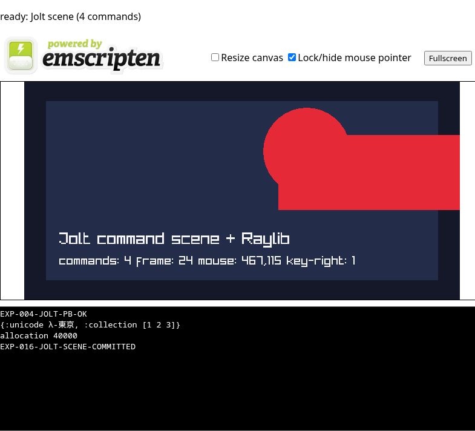

EXP-016: scene defined in Jolt
The same interactive composition as EXP-015, but Jolt now owns every command type, coordinate, dimension, color, and input mapping. C is a bounded generic command renderer and remains the safe Raylib/browser frame owner.
Live build
Move the pointer over the canvas and hold →. Jolt's circle command follows the mouse and its rectangle command shifts 100 pixels.
Not loaded (26 MB).Jolt scene source
Authoritative source: src/app/exp016.clj
(def scene-commands
;; op x y width-or-radius height red green blue input-x input-y
[[1 0 0 0 0 20 24 41 0 0] ; background
[2 36 32 648 296 35 45 74 0 0] ; panel
[3 180 150 72 0 230 41 55 1 1] ; mouse circle
[2 320 88 300 124 230 41 55 2 0]]) ; ArrowRight rectangle
(defn upload-scene! []
(let [values (vec (apply concat scene-commands))]
(doseq [index (range (count values))]
(project-scene-write index (nth values index)))
(project-scene-commit (count scene-commands))))Jolt owns
The command list defines shape operations, layout, RGB colors, mouse substitution, and ArrowRight displacement.
C owns
A generic bounded interpreter polls Raylib input and executes background, rectangle, and circle commands on the frame owner.
Browser owns
Emscripten's main loop schedules frames. Readiness is published only after the first completed command frame.
Verified result

Chromium showed four Jolt commands, mouse 467,115, key-right: 1, cross-origin isolation, and no page exception. Read the full EXP-016 report or artifact hashes.